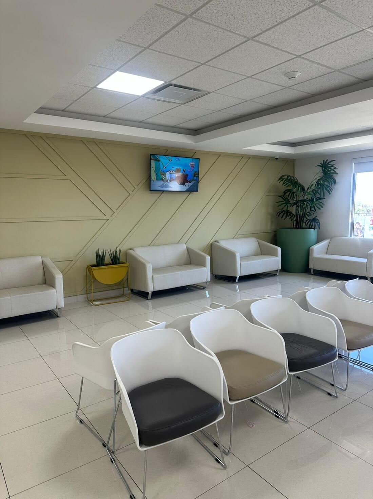
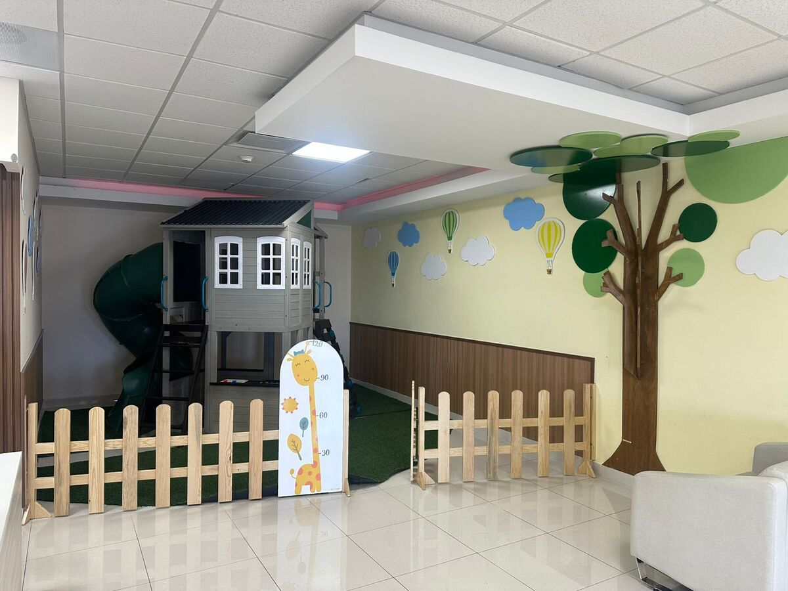

Consulta prenatal pediátrica
Una conversación previa al nacimiento de tu bebé para preparar lo esencial: lactancia, vacunas y primeros cuidados.
Atención pediátrica con la experiencia clínica de un médico intensivista. Detección oportuna, evidencia científica y trato humano.
El Dr. Gerardo Félix Ramos es pediatra egresado de la Universidad Autónoma de Guadalajara, especialista en Pediatría por la UNAM y subespecialista en Medicina del Enfermo Pediátrico en Estado Crítico por la Universidad Autónoma de Nuevo León.
Su formación combina la consulta pediátrica con la experiencia diaria de la terapia intensiva. Esa mirada doble le permite detectar a tiempo lo que otros podrían pasar por alto.
Además de su práctica clínica, es profesor de posgrado en pediatría y urgencias pediátricas, con publicaciones científicas indexadas y diplomados en ecografía crítica y nutrición pediátrica.
"La pediatría no es medicina pequeña. Es medicina precisa."
Una conversación previa al nacimiento de tu bebé para preparar lo esencial: lactancia, vacunas y primeros cuidados.
Seguimiento del crecimiento, desarrollo neurológico, vacunación y nutrición en cada etapa.
Diagnóstico y tratamiento oportuno de padecimientos pediátricos comunes y complejos.
Criterio clínico de intensivista para detectar señales tempranas y actuar a tiempo.
Atención en Hospital San José · Tercer piso, Módulo C · Hermosillo, Sonora.
Equipo de diagnóstico moderno en un consultorio diseñado para que los más pequeños se sientan en confianza.


El Dr. Félix mantiene una práctica clínica activa en investigación, con publicaciones revisadas por pares en pediatría crítica. Esto significa que cada consulta está sostenida por evidencia, no sólo por experiencia.
Félix-Ramos G. Bol Clin Hosp Infant Edo Son. 2024;41(1):31–35.
Gastelum-Bernal MA, Mondragón-González LI, Peñuñuri-Ballesteros JM, Félix-Ramos G, et al. Bol Med Hosp Infant Mex. 2024;81(2):90–96.
Gastelum-Bernal MA, Félix-Ramos G, Cadena-Mejía LR, et al. Bol Med Hosp Infant Mex. 2023;80(6):361–366.
Garza-Alatorre AG, Rodríguez-Martínez V, Félix-Ramos G, Cabrera-Antonio YA. Medicina Universitaria. 2022;24(2):76–81.
Garza-Alatorre A, Rodríguez-Martínez V, Félix-Ramos G, et al. Rev Mex Pediatr. 2022;89(4).
Ver perfil completo en ResearchGate ↗ · Google Scholar ↗
En Instagram, el Dr. Gerardo comparte contenido educativo basado en evidencia para padres que quieren entender mejor la salud de sus hijos.
Hospital San José
Blvd. José María Morelos 340
Tercer piso · Módulo C
Hermosillo, Sonora · 83148
Lunes a viernes · 10:00 a 20:00
Sábados · 10:00 a 14:00
+52 644 146 0765
10490515 · 12119320 · 13432840